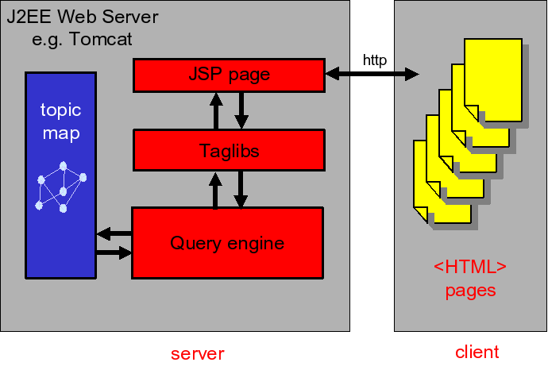
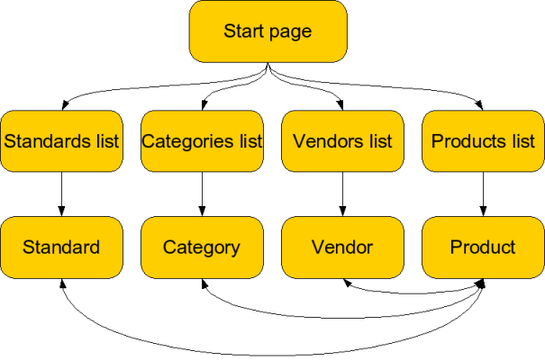

| Published by: | Ontopia |
|---|---|
| Date: | 2013-08-01 |
| Version: | 5.3.0 |
|
This document explains how to develop your own web applications using the Ontopia Navigator Framework. It describes the architecture and main concepts of the Navigator Framework, how to configure the Navigator, and introduces the tag libraries used in web application development.
It is assumed that the reader is familiar with the use of the operating system under which the navigator is to run, as well as the basics of HTML. Working knowledge of topic maps is also assumed.
The idea behind the Ontopia Navigator Framework is that although the Omnigator can display any topic map and has a nice user interface, it is unlikely that all those building web sites using topic maps will want to use the Omnigator as the web site presenting their topic maps to the world. Most likely, those building topic map web sites will wish to have them look as much like ordinary web sites as possible.
Using the navigator framework it is easy to develop new topic map-based web sites, and these web sites need not look anything like the Omnigator. In fact, they can have any user interface at all. The navigator framework does not generate any HTML; this is left for your web application to do. The result is that you have complete control over the layout and structure of your application.
This document will show you how to create web applications using the Ontopia Navigator Framework. This introductory section will explain the architecture and stucture of the framework, while the following section will show the basics of making web applications. The final sections covers some of the more advanced areas of the framework.
The Ontopia Navigator Framework is based on the J2EE (Java 2, Enterprise Edition) platform, and should run in any compliant J2EE application server which supports JSP 1.1 or higher. It has been tested with many application servers, and should not cause problems when tried on a new server.
Web pages written using the navigator framework are written as JSP (JavaServer Pages). JSP is a Java technology that lets you write web pages as HTML with embedded Java code. The Java code is evaluated to produce either output in the page, or desirable side-effects on the server (such as updates in a topic map or a database). JSP pages can also use tags implemented in Java, which can produce output and control the execution of pages. JSP is easy to learn, efficient in use, and creates well-performing web applications.
The navigator framework mainly consists of a set of tag libraries that make it possible to write JSP pages that consist of nothing but HTML and JSP tags. This makes the pages easy to read and maintain; the tags being something like an 'XSLT for topic maps'. The application when written consists of a set of JSP pages, plus possibly some Java classes that have been plugged in to provide extra functionality.
When running, the architecture of the web application is as shown below.

Figure 1. A Navigator Application
The navigator framework uses the topic map registry to access the topic maps it works with. This means that it is completely independent of where the topic maps come from and which topic map implementation they use. How to configure the registry is explained in The Ontopia Navigator - Configuration Guide.
The tags in the navigator tag libraries operate in an execution context. This context contains a number of variable bindings, which are mappings from variable names to values. These values are always collections of objects, which may be topic map objects, strings, or other kinds of objects.
A JSP page written using these tag libraries works by extracting information from the current topic map and storing it in variables in the execution context. The page then uses the information in the variables to generate the content that makes up the rendered page that the user will see.
The tags have been separated into two different tag libraries, organized by the functionality they provide:
The document The Navigator Tag Libraries: Reference Documentation contains detailed information about all the tags. Please consult it to find tags not mentioned in this tutorial, and more comprehensive information about those mentioned. The following section gives a tutorial on how to use the tags in these tag libraries.
The navigator framework uses the topic map registry of the topic map engine to find out what topic maps are available, and also to look up individual topic maps by ID. The IDs are assigned by the registry, and for topic maps loaded from files they are the file name (without path). For topic maps residing in the RDBMS backend the ID will be "RDBMS-XXX", where XXX is the ID of the topic map in the tm_topic_map table. Generally, you can use the Omnigator to find the ID of a topic map, by looking at the tm parameter in the URI of the topic map page.
How to configure the topic map registry is explained in The Ontopia Navigator - Configuration Guide, in the section on the tm-sources.xml file. If you have bought the engine product you can also find more information in the javadoc of the net.ontopia.topicmaps.entry.XMLConfigSource class.
Note that throughout the navigator framework topic map objects are identified by their object IDs. These are inserted into links by the framework, and later read from HTTP requests by the framework. This enables one page to tell another which topic to display. How to do this will be explained later in this tutorial.
In this section we will create a web application for the Free XML Tools topic map and show how it works. You can find the source code to it in the $TOMCAT_HOME/webapps/xmltools directory in your installation. Feel free to look at the source code while reading this section, and also to change and play around with it in any way you like. (After you've changed a JSP page you need only reload it in your browser to have it recompiled.)
The web application must necessarily mirror the structure of the information in the topic map, so we'll start out by looking at the topic map. A useful tool for getting an overview of a topic map is the statistics plug-in to the Omnigator.
The statistics plug-in shows us that the Free XML Tools topic map contains categories/subcategories, products, standards, and vendors. There are associations between products, and from categories, standards, and vendors to products. Clearly, the products are what the site revolves around, and the other topic types provide ways of finding the products.
The best way to organize the site seems to be to have a start page, with links to pages containing lists of categories, products, standards, and vendors. The pages with lists can contain links to each individual instance, which again can have links to the topics it is associated with. This structure is shown in the diagram below. There will also be a number of cross-links within this hierarchy, shown at the bottom of the diagram.

Figure 2. Site structure
This should give us enough to work with, so let's move on to writing the actual application.
To create your web application, create a directory named xmltools inside the webapps directory of your Tomcat installation. The next step is to create a file called index.jsp inside it, with the contents shown below.
Hello, world!
<title>Hello, world!</title>
<h1>Hello, world!</h1>
<p>This is my first JSP page.</p>
Now we have a web page, but Tomcat will not find our web application before we add a web.xml file, so the next step is to do that. Start by making a WEB-INF directory inside the new xmltools directory. Then create a file named web.xml inside the WEB-INF directory. This will contain the configuration information needed by the navigator framework. The contents of this file are shown below, with explanations in comments.
A minimal web.xml file
<?xml version="1.0" encoding="ISO-8859-1" ?>
<!DOCTYPE web-app
PUBLIC "-//Sun Microsystems, Inc.//DTD Web Application 2.2//EN"
"http://java.sun.com/j2ee/dtds/web-app_2_2.dtd">
<web-app>
<display-name>Free XML Tools</display-name>
<description>
A web site with information about free XML tools.
</description>
<session-config>
<session-timeout>30</session-timeout>
</session-config>
<welcome-file-list>
<welcome-file>index.html</welcome-file>
<welcome-file>index.jsp</welcome-file>
</welcome-file-list>
</web-app>
This file contains references to our configuration files, so we need to add those. First, create the xmltools/WEB-INF/config directory, and create a file called application.xml inside it, with the contents shown below.
The application.xml file
<?xml version="1.0"?>
<configuration type="application">
<properties>
<property name="allowLoadOnRequest" value="true"/>
</properties>
<classmap>
<class shortcut="nameComparator"
fullname="net.ontopia.topicmaps.nav.utils.comparators.NameComparator"/>
</classmap>
</configuration>
This tells the framework that it should load topic maps whenever they are requested by users (allowLoadOnRequest) and what Java class it should use to sort the names of topics.
Now, finally, you can start the Tomcat server. If you already had it running, please restart it. Then connect to http://localhost:8080/xmltools/, where you should see the page you just wrote. The server will compile the JSP page the first time you load it, and so that first time will be a little slow, but after that it will load instantly.
We are now ready to write the application, and can start with the start page: index.jsp. The source code of this could be as shown below.
The index.jsp page
<title>Free XML Tools</title>
<h1>Free XML Tools</h1>
<p>
This is a site about free XML tools, which you can find organized by:
</p>
<ul>
<li><a href="standards.jsp">the standards they support</a>,</li>
<li><a href="vendors.jsp">the vendors that make them</a>,</li>
<li><a href="categories.jsp">the categories they belong to</a>, and</li>
<li><a href="products.jsp">name</a>.</li>
</ul>
Since this page can be written statically we do not yet make any use of the tag libraries, but instead write a pure HTML page.
The next step is to write the page that lists all the standards in the topic map. We start by creating a skeleton of the standards.jsp page, as shown below.
A skeleton standards page
<%@ page contentType="text/html; charset=utf-8" %>
<%@ taglib uri='http://psi.ontopia.net/jsp/taglib/tolog' prefix='tolog' %>
<tolog:context topicmap="xmltools-tm.xtm">
<title>The standards</title>
<h1>The standards</h1>
<p>
Here you can find all the standards supported or used by the tools
on this site:
</p>
<%-- more code to go here --%>
</tolog:context>
The line beginning with <%@ is a declaration that makes the tag tolog library available in the page, with the given prefix. The tolog:context tag sets up the execution context, and tells the framework what topic map we are working with. The topicmap attribute contains the ID of the topic map, as defined by the topic map registry. If the topic map has not already been loaded when this page is accessed, the tolog:context tag will do it for us. (Note that this depends on the allowLoadOnRequest property in the application configuration file, which is why we set that to true above.)
The next step is to list all the standards. Or, to put it the topic map way, we need to find all the instances of the class standard, which is represented by the topic 'standard'. The way to do this is to use a tolog query which finds all standards, and use it with the tolog:foreach tag, which will loop over all the results returned by the query.
<ul>
<tolog:foreach query="instance-of($STD, TMTT_Standard) order by $STD?">
<li>Yet another standard</li>
</tolog:foreach>
</ul>
This will give us one row for each standard, but all the rows will read the same, so we need to somehow output the names of the standards we've found. Inside the tolog:foreach tag, all the variables defined by the query (in this case only STD) will be available. So we can use the tolog:out tag, which can output topics (by picking their most suitable name). Adding this gives us the code below.
<ul>
<tolog:foreach query="instance-of($STD, TMTT_Standard) order by $STD?">
<li><tolog:out var="STD"/></li>
</tolog:foreach>
</ul>
The next step is to make a link to the page for each standard, which is of course easy, but we also need to pass the ID of the topic for the standard to that page. This can be done with an HTTP request parameter, and we can use the tolog:id tag to get the ID, as shown below.
<ul>
<tolog:foreach query="instance-of($STD, TMTT_Standard) order by $STD?">
<li><a href="standard.jsp?id=<tolog:id var="STD"/>"
><tolog:out var="STD"/></a></li>
</tolog:foreach>
</ul>
We are now ready to write the pages that display information about the individual standards (standard.jsp). This page is slightly different in that it needs to get the ID of the topic from id parameter of the HTTP request, and then look up that topic. Note that this ID is the ID of the topic that was put into the URI by the tolog:id tag. Below is the JSP source skeleton for this page.
<%@ page contentType="text/html; charset=utf-8" %>
<%@ taglib uri='http://psi.ontopia.net/jsp/taglib/tolog' prefix='tolog' %>
<tolog:context topicmap="xmltools-tm.xtm">
<tolog:set var="standard" reqparam="id"/>
<title><tolog:out var="standard"/></title>
<h1><tolog:out var="standard"/></h1>
<%-- more code to go here --%>
</tolog:context>
This page is rather like the previous one, except that we are now using the tolog:set tag to pick out the topic from the request parameter (using the reqparam attribute), and setting it into a variable we name standard. This lets us use the tolog:out tag to output the name of the standard at the top of the page.
Now the question is what more we can display to the user about the standard they have chosen. The topic map contains the following information about standards:
Occurrences of the types specification, link collection, site about, and home page.
Associations to products that use the standard.
Associations to products that implement the standard.
The most reasonable way to do this seems to be to make a table of the occurrences, and then to list the associated products below the table. The code below produces the table of occurrences.
<!-- OCCURRENCES -->
<tolog:if query="occurrence(%standard%, $OCC)?">
<table>
<tolog:foreach query="select $OCCTYPE, $URI from
occurrence(%standard%, $OCC),
type($OCC, $OCCTYPE),
resource($OCC, $URI)
order by $OCCTYPE, $URI?">
<tr><th><tolog:out var="OCCTYPE"/>:
<td><a href="<tolog:out var="URI"/>"><tolog:out var="URI"/></a>
</tolog:foreach>
</table>
</tolog:if>
We start out by checking if there are any occurrences of this topic, since we don't want to produce the table element if there are none. We do this using the tolog:if tag, which will only execute its contents if the query returns at least one row. Note that in this query we need to refer to the current standard, which is in the standard variable. We do this by using the %standard% syntax in the query.
After that, all we need to do is to do a query that finds all the occurrences, their types, and their URIs, and we can loop over them with tolog:foreach and output them. Notice that the tolog:out tag just as happy to display the URI as it is to display topics.
The next step is to list all the topics that implement the standard, which is done by the code below.
<tolog:if query="TMAT_StandardImplemented(%standard% : TMTT_Standard,
$PRODUCT : TMTT_Product)?">
<p>
This standard has been implemented by the following products:
</p>
<ul>
<tolog:foreach query="TMAT_StandardImplemented(%standard% : TMTT_Standard,
$PRODUCT : TMTT_Product)
order by $PRODUCT?">
<li><a href="product.jsp?id=<tolog:id var="PRODUCT"/>"
><tolog:out var="PRODUCT"/></a></li>
</tolog:foreach>
</ul>
</tolog:if>
There's nothing really new here, so we won't go into the details of how it works.
Finally, we list all the products that use this standard. This is very similar to what we did above, as you can see from the code below.
<tolog:if query="TMAT_StandardsUse(%standard% : TMAR_UsedIn,
$PRODUCT : TMAR_UsedBy)?">
<p>
This standard is used by the following products:
</p>
<ul>
<tolog:foreach query="TMAT_StandardsUse(%standard% : TMAR_UsedIn,
$PRODUCT : TMAR_UsedBy)
order by $PRODUCT?">
<li><a href="product.jsp?id=<tolog:id var="PRODUCT"/>"
><tolog:out var="PRODUCT"/></a></li>
</tolog:foreach>
</ul>
</tolog:if>
We stop here, since most of the remaining pages will be very similar to the pages we have already shown. Writing the rest of the application is left as an exercise for the reader.
This section covers some of the more advanced aspects of writing web applications with the navigator framework. You do not need to understand these to write applications with the framework, but the features presented here can make the job easier, and can also lead to a superior result.
Let's imagine that we wanted to create a list of all vendors, and that for each vendor we wanted to list all its products. We could do this with two nested foreach-tags, an outer one for the vendors, and an inner one for the products. However, this requires us to use two queries instead of one (even though we can select both in a single query). This isn't good for performance, since it means that if there are 100 vendors, the inner query will be run 100 times. So instead of running 1 query, we run 101.
The other approach would be to do a single query that finds both, and then using it in a single foreach-loop. However, if we want to create a nested HTML list we now have to be able to tell when the vendor in this iteration is different from that in the previous one, and the tag library doesn't support that. What it does support is grouping, which solves this problem quite easily.
The code below shows how to do the outer loop.
<%@ page contentType="text/html; charset=utf-8" %>
<%@ taglib uri='http://psi.ontopia.net/jsp/taglib/tolog' prefix='tolog' %>
<tolog:context topicmap="xmltools-tm.xtm">
<title>The vendors</title>
<h1>The vendors</h1>
<ul>
<tolog:foreach query="TMAT_ProductVendor($VENDOR : TMAR_Creator,
$PRODUCT : TMTT_Product)
order by $VENDOR, $PRODUCT?">
<li><a href="vendor.jsp?id=<tolog:id var="VENDOR"/>"
><tolog:out var="VENDOR"/></a>
<%-- inner loop goes here --%>
</tolog:foreach>
</ul>
</tolog:context>
The next step is to make the outer foreach-loop only iterate once for each vendor. This we do by adding a groupBy attribute to it. After this, we need to add a new foreach-loop for the products, but we don't give it a query, since it's going to use the parent's query. The result is shown below.
<ul>
<tolog:foreach query="TMAT_ProductVendor($VENDOR : TMAR_Creator,
$PRODUCT : TMTT_Product)
order by $VENDOR, $PRODUCT?" groupBy="VENDOR">
<li><a href="vendor.jsp?id=<tolog:id var="VENDOR"/>"
><tolog:out var="VENDOR"/></a>
<ul>
<tolog:foreach>
<li><a href="product.jsp?id=<tolog:id var="PRODUCT"/>"
><tolog:out var="PRODUCT"/></a>
</tolog:foreach>
</ul>
</tolog:foreach>
</ul>
Note that it is possible group on more than one variable. This allows you to use multiple variables set in the query in the outer loop. For example, if the VENDOR's subject identifier is in the variable VENDOR-ID, the setting groupBy to VENDOR VENDOR-ID gives access to both variables in the outer loop.
Note that it is also possible to have several levels of foreach tags, where new variables are grouped on each level. For example, you can group on COUNTRY in the outermost loop, then group on PROVINCE in the next loop, and finally iterate over CITY in the third loop.
Quite often applications contain fragments of code that with only minor variations are repeated over and over again. JSP provides three different mechanisms for dealing with this: static includes, dynamic includes, and (in JSP 2.0) tag files.
Static includes are the simplest mechanism. They let you reference another JSP file, and the effect is as though you had copied the other file and pasted it into the first file. This means that the Navigator Framework variables used in the parent file will all be visible in the included file. The syntax is as follows:
<%@ include file="relativeFragment.jsp" %>
The other way to include a fragment is to use a dynamic include, with the jsp:include tag, which belongs to the jsp tag library, which is part of the JSP standard, and does not need to be declared. Dynamic includes are different from static ones in that the included file is considered a separate page (so you need to declare all tag libraries in it), and also in that it is checked for updates each time it is referenced. The variables set in the parent file will be visible in the referenced file. The example below shows the syntax.
<jsp:include page="relativeFragment.jsp"/>
The final and most powerful way to make reusable fragments is with tag files, which let you create your own tags using JSP fragments. This feature is only available in JSP 2.0, however, so whether it works for you depends on what server you use. It will not work in Tomcat 4.x, for example; you must use Tomcat 5.x. For more information, see this java.net tutorial.
A common requirement is to have a topic that is part of some hierarchy, and to want to show all the ancestors of that topic in order as you go up the tree. This is not possible in a single tolog query, because although the query will easily find all ancestors, it will not be able to rank them by distance to the starting topic. The solution is to use a recursive code fragment.
Imagine that you have a category in a taxonomy in the variable named category and you want to show all its ancestor categories all the way up to the root in a breadcrumb-like fashion. To do that, write the following in your JSP file:
<jsp:include page="category-tree.jsp"/>
Note that you have to use jsp:include here, since a static include would cause an infinite recursion, as static includes are processed at compile-time. To make this work we also need category-tree.jsp, which looks as follows:
<%-- must redeclare taglibs inside the fragment --%> <%@ taglib uri='http://psi.ontopia.net/jsp/taglib/tolog' prefix='tolog'%> <%-- we move on to the parent of this topic --%> <tolog:if test="broader-narrower(%PARENT% : narrower, $PARENT : broader)?"> <%-- the parent is the new topic --%> <tolog:set var="topic" query="$T = %PARENT%?"/> <%-- render all the ancestors --%> <jsp:include page="category-tree.jsp"/> <%-- render the separator --%> | </tolog:if> <%-- we render the topic after all its ancestors --%> <a href="category.jsp?id=<tolog:id var="topic">" ><tolog:out var="topic"/></a>
Sometimes one may want to get the values to be used with the tag libraries from Java code, for example because they may be retrieved from request parameters or configuration files. This can be done quite easily using the <%= ... %> construct. Here is an JSP fragment which shows you how could use this:
Using dynamic attribute values
<%
String searchFor = request.getParameter("search_for");
String query = "topic-name($TOPIC, $N), " +
"value-like($N, \"" + searchFor + "\")?";
%>
<ul>
<tolog:foreach query="<%= query %>">
<li><tolog:out var="TOPIC"/>
</tolog:foreach>
</ul>
One key aspect of the tag libraries that has not been discussed so far is that of variable scope. This has nothing to do with scope as in topic maps, but is the familiar concept of scope in programming language theory. A scope in this sense is the region of the source code in which the binding of a variable is visible. In other words: when you use tolog:set to assign a value to the variable foo its scope is the part of the source code where you can get the value of foo.
The tag libraries have lexical scope, also known as static scope, which means that every variable is only available within a fixed region of the source code, and that you can work out what that region is just by reading the source code. It does not depend on runtime behaviour at all.
In the tag libraries, some of the tags establish new lexical scopes (such as tolog:context, tolog:if, tolog:when, tolog:otherwise, and tolog:foreach) while others are neutral with respect to scope. The tag library reference documents which tags create new lexical scopes.
So to find out where a variable binding is visible, find the nearest ancestor tag of the tolog:set tag that establishes a lexical scope. The variable will be visible within that tag, but not outside it. Whether a variable with the same name already exists within an outer scope makes no difference.
To use the Navigator Framework with the RDBMS backend, the main thing that needs to be done is to configure the tm-sources.xml file correctly, as described in the configuration guide. However, since the RDBMS backend has to support transactions, there are some rules for how to use the APIs that one can freely break with the in-memory engine, but which will cause problems if broken when using the RDBMS backend. This section attempts to explain what these are.
When using the RDBMS backend, Ontopia maintains a pool of topic map stores, and everything that is done with a topic map is done using one of these stores. For Ontopia to be able to maintain the pool properly, topic maps have to be explicitly returned to the pool. This is done by calling the close method on the TopicMapStoreIF interface. Note that if you use the tag libraries this happens automatically for the topic maps retrieved by the context tag.
There are some issues to be aware of here, however:
Any objects retrieved through ContextUtils (see section 4.1) come from the transaction maintained by the framework for the purpose of rendering the page, and will be taken care of by the context tag.
Any topic maps opened explicitly, for example using TopicMapRepositoryIF, will get their own transactions. This means that trying to pass objects from these transactions into the context maintained by the JSP tags (for example as parameters to a tolog query) will not work. Bizarre and hard-to-reproduce bugs are likely to be the result of this.
Also, any topic maps opened explicitly will also have to be closed or returned explicitly. The context tag cannot take care of this, because it is not aware of these transactions.
This section only applies to JSP 1.1 (which is an old version; today JSP 1.2 and 2.0 are the most common). If you use JSP 1.1 you absolutely must read this; if you don't, you can just skip this.
JSP 1.2 introduced the javax.servlet.jsp.tagext.TryCatchFinally interface, which allows a tag to catch exceptions thrown in its body or perform actions even if exceptions have been thrown. The context tag implements this interface, as this is absolutely necessary to avoid running out of stores in the store pool when exceptions are thrown (as occasionally they are).
Implementing this interface causes problems for JSP 1.1, of course, since the JSP 1.1 jar files do not contain a class file for this interface. This is worked around by means of a special jar file named config/jsp-11/jsp12-compat.jar, which is included in the Ontopia distribution. This means the tags can run, but does not provide the desired try/catch/finally behaviour, since JSP 1.1 does not support this. The only known solution to this problem in JSP 1.1 is to manually add a try/finally to each JSP page.
This section describes how to solve some commonly occurring problems when writing applications with the tag libraries.
Sometimes one wants to use the tags to collect information from the topic map, and then process it in ways that only Java code can do. This can easily be done using the utility class net.ontopia.topicmaps.nav2.utils.ContextUtils, which has utility methods for accessing the variables in the context.
Below is shown a code snippet that illustrates how to use this class.
Using ContextUtils
<tolog:set var="picture" query="illustration(%topic%, $URI)?"/>
<%-- And now we want to use Java to get at the illustration --%>
<%
String ill = (String) ContextUtils.getSingleValue("picture", pageContext);
// do useful things with 'ill'
%>
The Navigator Framework supports accessing and setting page attributes in a way that is similar to how the JSP Expression Language works. Page attributes can be accessed by name (and bean property) from the var attribute of the tolog:out, tolog:oid, and tolog:id tags. This makes it easy to use the Navigator Framework together with other tag libraries, such as the JSTL tag libraries, and it also makes it possible to use the Navigator Framework with a Model-View-Controller (MVC) approach.
How it works is perhaps best shown with an example, shown below.
<!-- The JSP page is run by a front controller servlet
which creates a model object and registers it as the JSP attribute model.
The model object has a getCurrentTopic method, returning the current
topic.
-->
<h1><tolog:out var="model.currentTopic"/></h1>
Basically, how this works is that variable references can not only refer to Ontopia variables, but also to JSP attributes. Lookups are done as follows:
First the reference is looked up as an Ontopia variable.
If this fails the reference is truncated at the first ".", and the result is looked up using the PageContext.findAttribute method. If this fails an error is reported.
For each ".foo" after the initial reference the following is applied to the result of the previous operation:
If the previous result is a Map the key "foo" is looked up.
Otherwise the method "getFoo" is looked up and called.
If both of the above fail the result is null, otherwise the next ".foo" is applied, or the value of the last returned if there are no more.
The tolog:set tag can also be used to set JSP attributes; see the tag library reference documentation of the scope attribute for more information.
When the Navigator Framework is used together with other tag libraries, especially the JSTL tag libraries, there is very often a need to access Ontopia variables from the other tag libraries. To support this, the tolog:context tag registers a Map attribute named "ontopia" in the request scope. This Map can be used to access all Ontopia variables in effect at the time of access. This means that using the JSP Expression Language you can access Ontopia variables using an expression like ${ontopia.foo}.
One example of this might be the following:
<tolog:foreach query="cms:is-about(%article.topic% : cms:work, $SUBJ : cms:subject)?">
<li><a href="topic.jsp?id=<c:out value="${ontopia.SUBJ.objectId}"/>"
><tolog:out var="SUBJ"/></a>
</tolog:foreach>
Here the ontopia refers to the variable map, SUBJ to the variable inside it containing a topic, and objectId to the getObjectId method on the topic in the variable.